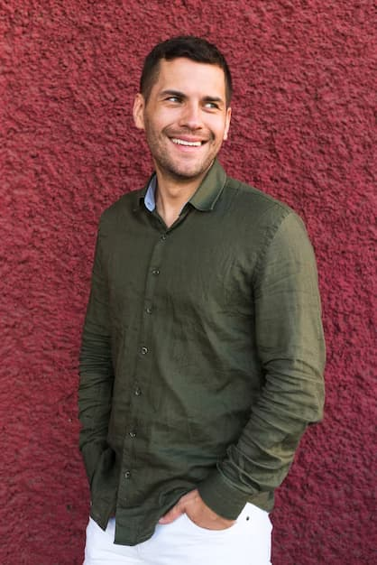

Equipo
{kind=link}
Federico Moran
Nace en Mendoza, Argentina en 1961. En el año 1990 se graduó como Arquitecto en la FAU de la Universidad de Mendoza. Continuó sus estudios de post grado en Bioclimática Edilicia y Teoría y cálculo. Desde 1994 está vinculado a la Universidad de Mendoza en el DICYT como investigador en proyectos de arquitectura y sustentabilidad. Durante el año 1995 y 1999 se vinculó y capacitó en Investigación y Proyecto con el Dr. Arq. Jorge Sarquis, FADU - UBA. Es Director y docente en Diseño del Instituto Sup. Avellaneda. Ha publicado en revistas especializadas, congresos, dictado conferencias, cursos y talleres en diferentes ámbitos institucionales. Desde 2001 es Miembro de 3QArquitectura desarrollando proyectos y obras además de haber ganando diversos concursos y premios..
{kind=link}
Mariano Peréz
Nace en Mendoza, Argentina, en 1978. Se recibe de arquitecto en 2005 en la Facultad de Arquitectura y Urbanismo de la Universidad de Mendoza. Realiza estudios de posgrado en la FADU-UBA desarrollando el programa de Actualización Proyectual, especializándose en investigación y proyecto. Desde 2010 hasta la actualidad se desempeña como docente en la Universidad de Mendoza, Universidad de Congreso y en el Instituto Dr. Nicolás Avellaneda. Desde 2006 es miembro de 3QArquitectura desarrollando proyectos y obras además de haber ganado diversos concursos y premios..

Facundo Ortiz
Nace en Mendoza en 1985, Argentina. En el año 2009 se graduó como Arquitecto en la FAU de la Universidad de Mendoza. Durante el año 2011 realiza estudios de posgrado en la FADU - UBA desarrollando el programa de Actualizacion Proyectual, especializándose en investigacion y proyecto con el Dr. Arq. Jorge Sarquis. Es docente en la carrera de Diseño de Interiores del Instituto Sup. Avellaneda. Desde 2001 es Miembro de 3QArquitectura.